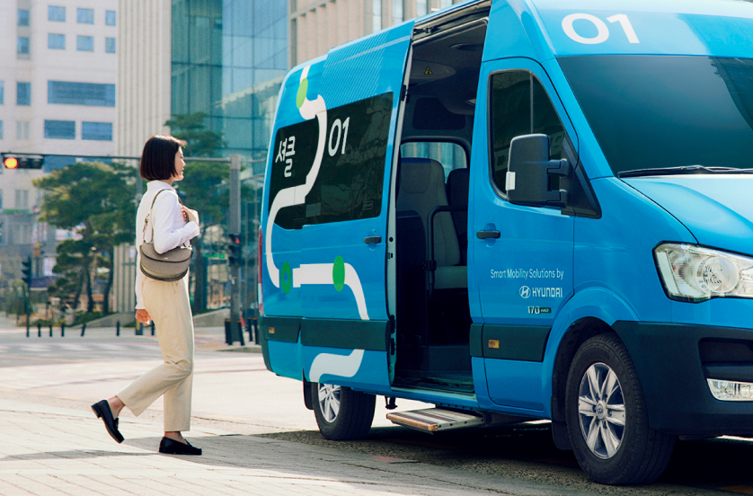
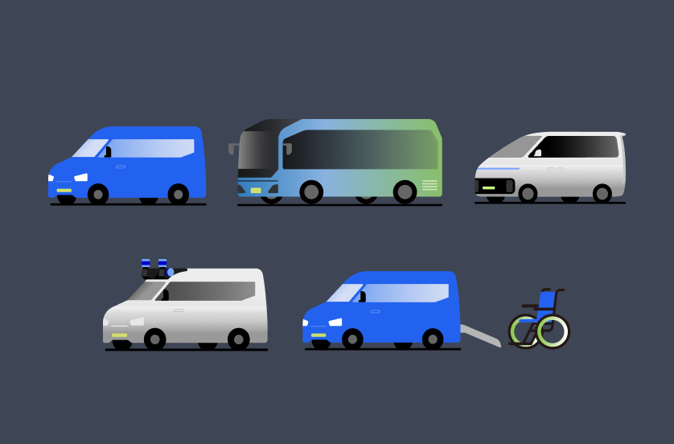
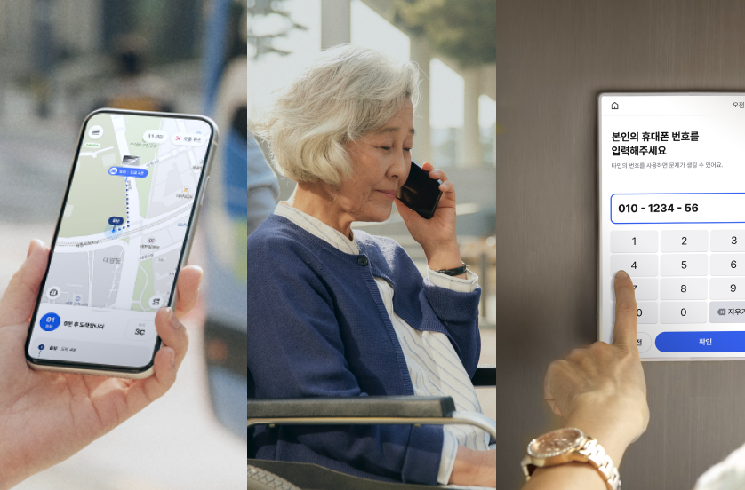

실시간 수요를 기반으로 효율적인 합승 경로를 생성하는 지능형 모빌리티 솔루션을
제공합니다. 지역 내 교통 사각지대를 없애고 지속가능한 형태로 이동을
혁신합니다.

고정된 노선 없이 지역 내에서 언제 어디서나
자유로운 이동이 가능하게 합니다.

수요 탄력형, 출근 노선형, 교통약자형,
관광형, 자율주행형 등 지역 특성과 목적에
맞는 다양한 차종 및 운행 유형을 지원합니다.

앱 이외에도 전화나 키오스크를 통한 호출을
지원하여 스마트하면서도 모두가 접근할 수
있는 보편적인 서비스를 제공합니다.